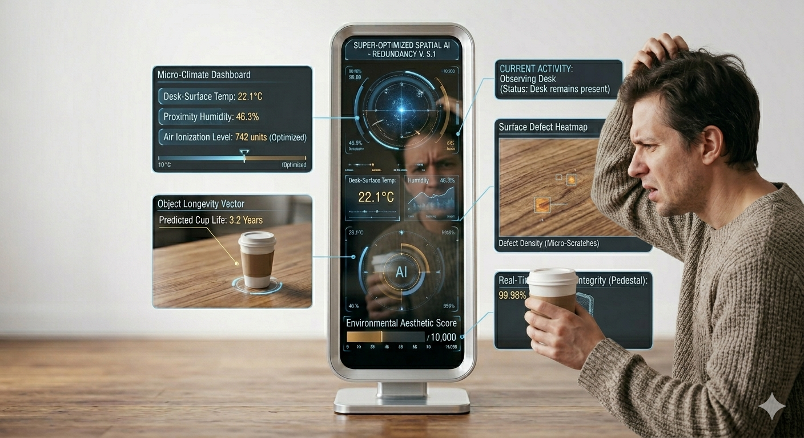

Max Fraser — Design Critic
While Norman diagnoses how we use things, Fraser acts as the moral conscience of the design world — interrogating why we keep making so many of them.
Source Material · Read Article ↗The Performance Review
Fraser identifies three critical failures driving the collapse of meaningful design practice in the modern industry.
Many pioneering design brands are now owned by private equity firms that pressure designers to produce "low-risk," predictable products that guarantee results for shareholders. The incentive is not to innovate — it is to repeat. This kills the visionary risk-taking that once gave objects their character, replacing authorship with committee-approved caution.
We are seeing an influx of "immersive experiences" and "smart" integrations that are often weak in concept and laden with jargon. When a chair needs an app to measure posture, or a kettle requires a Wi-Fi password, the design has become a distraction rather than a solution. Connectivity should only exist where it solves a genuine human problem — not to justify a premium price point.
The current industry incentive model — where designers often earn only a 3% to 5% royalty — favours a "break-and-replace" cycle over repairable products. Planned obsolescence is the unethical practice of engineering a product to fail so the user is forced to buy the next model. The object is never meant to outlive its marketing campaign.

This AI mirror is a prime example of the "Tech Invasion"—an immersive gadget that often complicates a basic morning routine with unnecessary digital noise As designers, we must ask if connectivity is solving a real problem or simply creating a new dependency; when a mirror requires a software update to function, the technology has become a hurdle rather than a help.
A Return to Honest Design
Fraser advocates for a return to "honest design" — the idea that objects should be transparent in their function, durable in their construction, and respectful of the user's intelligence. True sustainability isn't only about green materials; it's about Ageless Design — objects that remain satisfying across generations because they are built on enduring principles rather than passing trends.
Purpose-Driven Technology
Connectivity should only exist if it solves a real, identified problem. A toaster does not need Bluetooth. An influx of "smart" features is only intelligent if it reduces friction — not if it creates a new dependency.
Repairability as a Core Feature
We must shift toward a circular economy where objects are kept in a perpetual loop — easily fixed, upgraded, and returned to use rather than discarded. Repairability is not an afterthought; it is the ethical foundation of design.
Longevity Over Trends
Good design serves the everyday needs of people, aiming for enduring aesthetics that slow down the "decay phase" of a product's life. An object that remains satisfying after ten years has achieved something a seasonal collection never can.
The Fraser Standard
The goal is not to be timeless in a frozen, classical sense — it is to produce work so resolved in its purpose and honesty that no trend cycle can make it feel obsolete. That is the highest ambition of the designed object.
Back to Home
MANIFESTO